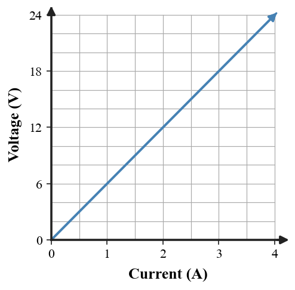
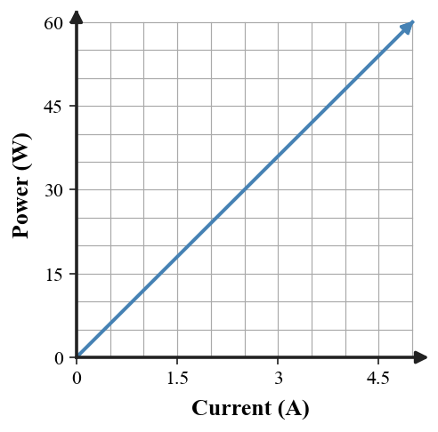
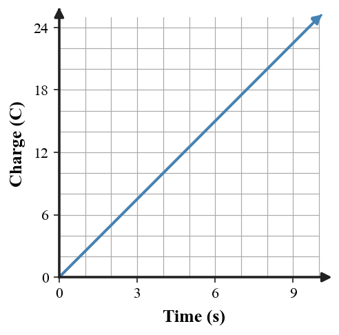
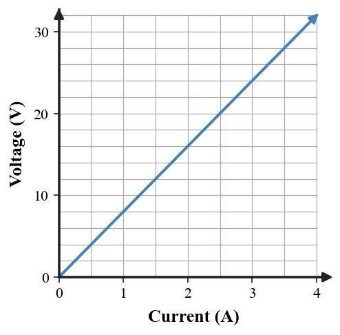
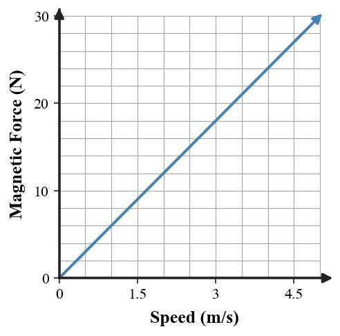
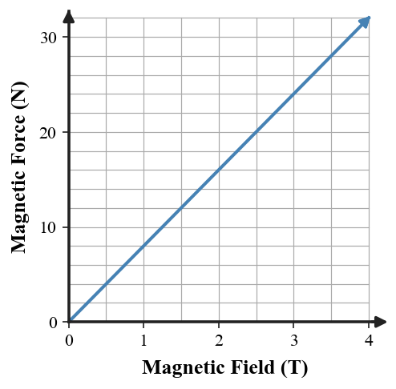
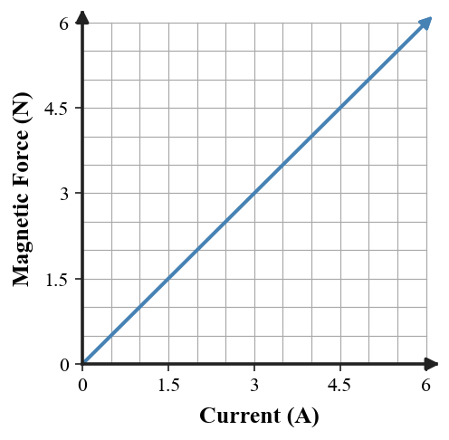
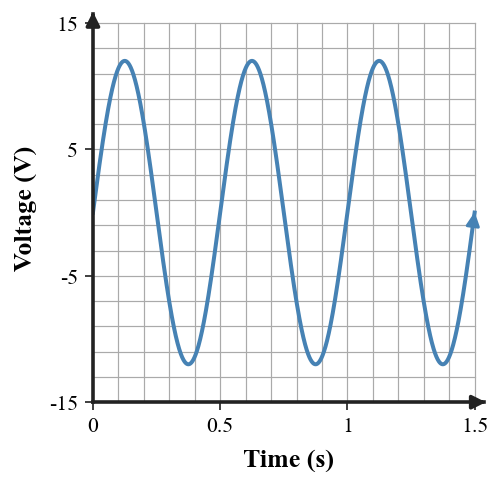
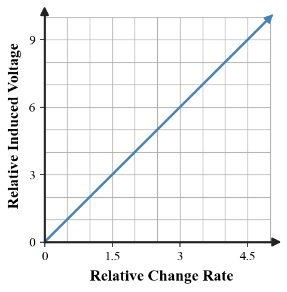
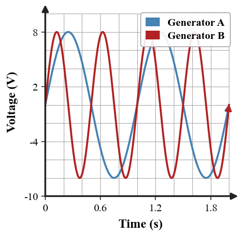

Find the next number in the pattern: 4, 7, 13, 25, 49, ____
Use $V=\pi r^2h$ with $\pi=3.14$. A cylindrical sample container has a volume of $2260.8\,\text{cm}^3$ and a radius of $6\,\text{cm}$. Determine its height.
Which term means opposition to charge flow?
A. Voltage
B. Current
C. Resistance
D. Power

The graph shows a resistor whose voltage and current follow $V=IR$. Use the graph and $V=IR$ to determine the current when the voltage is $18\,\text{V}$.
Before Mount Everest was discovered, what was the highest mountain on Earth?
Determine the Celsius temperature using $F=\frac95C+32$. A weather station reports $86^\circ\text{F}$.
Which description best matches current?
A. Energy per charge
B. Rate of charge flow
C. Opposition to charge flow
D. Rate of energy transfer

For a device operating at a constant $12\,\text{V}$, the graph shows how power changes with current. Use $P=IV$ to determine the power when the current is $3.5\,\text{A}$.
What eight-letter word names the complete set of 26 letters used in English?
Use $D=\frac{m}{V}$. A metal sample has a mass of $540\,\text{g}$ and a density of $2.7\,\text{g/cm}^3$. Determine its volume.
A battery provides an electric potential difference, or energy per charge. Which term names that quantity?
A. Resistance
B. Power
C. Current
D. Voltage
Use $E=Pt$. A $75\,\text{W}$ lamp runs for $2.0\,\text{h}$. Determine the electrical energy used in watt-hours.
What familiar phrase is represented below?
TROUBLE TROUBLE
A $10\,\text{kg}$ cart has $320\,\text{J}$ of kinetic energy. Use $KE=\frac12mv^2$ to determine its speed.
Which statement correctly describes magnetic pole interactions?
A. Like poles attract and unlike poles repel
B. Like poles repel and unlike poles attract
C. All poles attract
D. All poles repel

The graph shows charge passing a point in a circuit over time. Use $I=\frac{Q}{t}$ to determine the current represented by the graph.
Maya is 14 years old and her brother is half her age. When Maya is 28, how old will her brother be?
Determine the mass using $p=mv$. A moving object has momentum $96\,\text{kg}\cdot\text{m/s}$ while traveling at $12\,\text{m/s}$.
The region around a magnet where magnetic effects can be detected is called a:
A. magnetic field
B. magnetic domain
C. circuit
D. conductor
Use $V=\frac{E}{q}$. A device transfers $54\,\text{J}$ of energy to $6\,\text{C}$ of charge. Determine the voltage.
Find the next number in the pattern: 8, 27, 64, 125, ____
A hydraulic pad supports a $500\,\text{N}$ force while the pressure is $2500\,\text{Pa}$. Use $P=\frac{F}{A}$ to determine the contact area.
A small region in magnetic material where many atomic magnetic effects are aligned is a:
A. transformer
B. generator
C. magnetic domain
D. circuit
Three resistors of $5\,\Omega$, $7\,\Omega$, and $8\,\Omega$ are connected in series. Use $R_{eq}=R_1+R_2+R_3$ to determine the equivalent resistance.
What can be broken without being held or touched?
Use $W=Fd$. A worker does $840\,\text{J}$ of work while pushing a cart $12\,\text{m}$ in the direction of the force. Determine the average force.
Which statement best describes a current-carrying wire?
A. The current produces a magnetic field around the wire
B. The current removes all magnetic fields
C. Only voltage can create magnetic effects
D. A magnetic field exists only when the wire is disconnected

The graph shows voltage versus current for a resistor. Use $V=IR$ to determine the current when the voltage is $24\,\text{V}$.
A family has two parents and six sons. Every son has the same one sister. How many people are in the family?
A $6\,\text{kg}$ backpack has $360\,\text{J}$ of gravitational potential energy. Use $PE=mgh$ with $g=10\,\text{m/s}^2$ to determine its height.
A compass near a wire deflects only when the circuit is closed. The compass is detecting:
A. resistance stored in the wire
B. a magnetic field produced by current
C. voltage particles leaving the battery
D. thermal energy only
Use $P=IV$. A device operates at $18\,\text{V}$ and draws $2.5\,\text{A}$. Determine its electrical power.
A $3\times3$ square array contains 9 dots. How many straight lines contain exactly 3 dots? Count horizontal, vertical, and diagonal lines.
Use $v=f\lambda$. A wave travels at $24\,\text{m/s}$ and has wavelength $3.0\,\text{m}$. Determine its frequency.
Which term describes the connection between electric currents and magnetic effects?
A. Refraction
B. Momentum
C. Equilibrium
D. Electromagnetism
Two resistors of $6\,\Omega$ and $3\,\Omega$ are connected in parallel. Use $\frac1{R_{eq}}=\frac1{R_1}+\frac1{R_2}$ to determine the equivalent resistance.
What has a head and a tail but no body?
A device is $75\%$ efficient and receives $2400\,\text{J}$ of input energy. Use $e=\frac{E_{out}}{E_{in}}\times100\%$ to determine useful output energy.
A coil of wire that acts like a magnet while current flows is called a:
A. permanent magnet
B. electromagnet
C. transformer
D. resistor

For a moving charge with $q=2\,\text{C}$ in a $3\,\text{T}$ field, the graph models $F=qvB$. Use the graph or formula to determine the magnetic force at $v=4\,\text{m/s}$.
What happens when you throw a red stone into the blue sea?
Determine the radius of a circular track using $C=2\pi r$. Its circumference is $31.4\,\text{m}$. Use $\pi=3.14$.
Which set of changes can strengthen a typical electromagnet?
A. Less current, fewer turns, air core
B. More current only
C. More turns only
D. More current, more turns, and an iron core

A $2\,\text{C}$ charge moves at $4\,\text{m/s}$. The graph shows magnetic force versus field strength. Use $B=\frac{F}{qv}$ to determine the field strength when the force is $24\,\text{N}$.
Five cats catch five mice in five minutes. At the same constant rate, how many cats are needed to catch 100 mice in 100 minutes?
A motor does $5400\,\text{J}$ of work at an average power of $450\,\text{W}$. Use $P=\frac{W}{t}$ to determine how long it operates.
Magnetic force can act directly on which of the following?
A. A stationary neutral object only
B. A moving charge or current-carrying wire in a magnetic field
C. Any object with mass, regardless of conditions
D. Light only

A $2.0\,\text{m}$ wire is perpendicular to a $0.50\,\text{T}$ field. The graph models $F=BIL$. Determine the force when the wire carries $6.0\,\text{A}$.
What five-letter word is pronounced the same even after four of its letters are removed?
A runner covers $400\,\text{m}$ in $80\,\text{s}$ at a constant speed. Using $v=\frac{d}{t}$, first determine the speed, then determine the time needed to cover $650\,\text{m}$ at that same speed.
The production of voltage caused by changing magnetic conditions is called:
A. electromagnetic induction
B. magnetic insulation
C. static charging
D. reflection

The graph shows the voltage output of an AC generator. Count the complete cycles shown in $1.5\,\text{s}$, then determine the frequency in cycles per second.
How many months have 28 days?
Use $P=IV$. A low-voltage device requires $96\,\text{W}$ while operating at $12\,\text{V}$. Determine the current.
A generator primarily converts:
A. electrical energy into mass
B. electrical energy into mechanical motion
C. mechanical energy into electrical energy
D. magnetic poles into charge

The graph represents the Unit 8 relationship that induced voltage increases as magnetic conditions change more rapidly. If the relative change rate increases from 2 units to 5 units, by what factor does the induced voltage increase in this model?
What can go up a chimney when it is down, but cannot go down a chimney when it is up?
Use $\frac{V_s}{V_p}=\frac{N_s}{N_p}$. A transformer has $300$ turns on its primary coil and $50$ turns on its secondary coil. If the primary voltage is $120\,\text{V}$, determine the secondary voltage.
Which term describes current that repeatedly reverses direction?
A. Alternating current
B. Direct current
C. Static charge
D. Resistance

The graph compares two AC generator outputs over the same time interval. Which generator has the greater frequency, and by what factor?
8.1 - Day 1
P1: 97. Each term is double the previous term minus 1.
P2: $h=V/(\pi r^2)=2260.8/(3.14\cdot36)=20\,\text{cm}$.
P3: C - resistance.
P4: $I=V/R=18/6=3.0\,\text{A}$.
8.1 - Day 2
P1: Mount Everest. It was still the highest mountain before people identified it.
P2: $C=(86-32)(5/9)=30^\circ\text{C}$.
P3: B - current is the rate of charge flow.
P4: $P=(3.5)(12)=42\,\text{W}$.
8.1 - Day 3
P1: ALPHABET.
P2: $V=m/D=540/2.7=200\,\text{cm}^3$.
P3: D - voltage.
P4: $E=(75)(2.0)=150\,\text{Wh}$.
8.2 - Day 1
P1: Double trouble.
P2: $v=\sqrt{2KE/m}=\sqrt{640/10}=8.0\,\text{m/s}$.
P3: B - like poles repel and unlike poles attract.
P4: Using $Q=20\,\text{C}$ at $t=8\,\text{s}$, $I=20/8=2.5\,\text{A}$.
8.2 - Day 2
P1: 21 years old. The age difference is 7 years.
P2: $m=p/v=96/12=8.0\,\text{kg}$.
P3: A - magnetic field.
P4: $V=54/6=9.0\,\text{V}$.
8.2 - Day 3
P1: 216. The terms are $2^3,3^3,4^3,5^3,6^3$.
P2: $A=F/P=500/2500=0.20\,\text{m}^2$.
P3: C - magnetic domain.
P4: $R_{eq}=5+7+8=20\,\Omega$.
8.3 - Day 1
P1: A promise.
P2: $F=W/d=840/12=70\,\text{N}$.
P3: A - current produces a magnetic field around the wire.
P4: The graph has $R=8\,\Omega$, so $I=24/8=3.0\,\text{A}$.
8.3 - Day 2
P1: 9 people: 2 parents, 6 sons, and 1 daughter.
P2: $h=PE/(mg)=360/(6\cdot10)=6.0\,\text{m}$.
P3: B - a magnetic field produced by current.
P4: $P=(18)(2.5)=45\,\text{W}$.
8.3 - Day 3
P1: 8 lines: 3 horizontal, 3 vertical, and 2 diagonal.
P2: $f=v/\lambda=24/3.0=8.0\,\text{Hz}$.
P3: D - electromagnetism.
P4: $1/R_{eq}=1/6+1/3=1/2$, so $R_{eq}=2.0\,\Omega$.
8.4 - Day 1
P1: A coin.
P2: $E_{out}=0.75(2400)=1800\,\text{J}$.
P3: B - electromagnet.
P4: $F=(2)(4)(3)=24\,\text{N}$.
8.4 - Day 2
P1: It gets wet.
P2: $r=C/(2\pi)=31.4/6.28=5.0\,\text{m}$.
P3: D - more current, more turns, and an iron core can strengthen an electromagnet.
P4: $B=24/(2\cdot4)=3.0\,\text{T}$.
8.4 - Day 3
P1: 5 cats. Each cat catches 20 mice in 100 minutes.
P2: $t=W/P=5400/450=12\,\text{s}$.
P3: B - a moving charge or current-carrying wire in a magnetic field.
P4: $F=(0.50)(6.0)(2.0)=6.0\,\text{N}$.
8.5 - Day 1
P1: QUEUE. Removing U, E, U, E leaves Q, which is pronounced the same.
P2: Intermediate: $v=400/80=5.0\,\text{m/s}$. Final: $t=650/5.0=130\,\text{s}$.
P3: A - electromagnetic induction.
P4: There are 3 complete cycles in $1.5\,\text{s}$, so $f=3/1.5=2.0\,\text{Hz}$.
8.5 - Day 2
P1: All 12 months.
P2: $I=P/V=96/12=8.0\,\text{A}$.
P3: C - mechanical energy into electrical energy.
P4: The model rises from 4 to 10 relative-voltage units, so the induced voltage increases by a factor of $10/4=2.5$.
8.5 - Day 3
P1: An umbrella.
P2: $V_s=120(50/300)=20\,\text{V}$.
P3: A - alternating current.
P4: Generator B. It completes twice as many cycles in the same time, so its frequency is 2 times Generator A's.